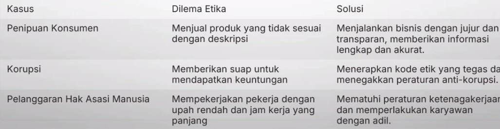

Pada hari Kamis 3 Oktober kemarin, mata kuliah etika profesi memasuki pertemuan ke 6 dan merupakan pertemuan setelah kuis pertama.
Dengan dilaksanakannya kuis pertama, ada pergantian pengajar yaitu ibu Katarina Leba, S.Ag., M.Th. Untuk materi kali ini yaitu Etika Bisnis, yaitu prinsip moral dalam bisnis.
Pertemuan kali ini tidak dilaksanakan di Unej, tetapi dilaksanakan secara daring. Berikut adalah resume yang sudah saya buat.
Etika Bisnis
Etika bisnis adalah prinsip moral yang memandu perilaku individu dan organisasi dalam dunia usaha. Etika bisnis penting untuk membangun hubungan kepercayaan dan keharmonisan dalam dunia usaha dan antara mitra dengan pelanggan.
Prinsip - prinsip
Berikut adalah prinsip-prinsip dalam etika bisnis:
- Kejujuran
Menghindari penipuan, manipulasi, dan ketidakjujuran dalam transaksi dan komunikasi.
- Keadilan
Memperlakukan semua pihak secara adil dan setara, tanpa diskriminasi.
- Integritas
Menunjukkan konsistensi antara ucapan dan tindakan, serta memegang teguh nilai - nilai etika.
- Tanggung Jawab
Menanggung konsekuensi atas tindakan dan keputusan, serta bertanggung jawab terhadap stakeholders.dari penipuan, manipulasi, dan ketidakjujuran dalam transaksi dan komunikasi.
Etika Bisnis dalam Dunia Usaha
Etika bisnis dalam dunia usaha sangatlah penting karena dapat membangun kepercayaan dan reputasi baik bagi perusahaan. Kepercayaan dari pelanggan, mitra, dan investor ini sangat penting untuk kesuksesan jangka panjang. Beberapa manfaatnya yaitu;
- Meningkatkan Kepercayaan
Etika bisnis membangun kepercayaan antara perusahaan dengan para stakeholders.
- Memperkuat Reputasi
Perusahaan dengan etika bisnis yang kuat memiliki reputasi yang baik di mata publik.
- Membangun Keunggulan Kompetitif
Etika bisnis menjadi pembeda bagi perusahaan di tengah persaingan bisnis.
- Mendorong Keberlanjutan
Etika bisnis membantu perusahaan dalam menjalankan bisnis secara berkelanjutan dan bertanggung jawab.
Tanggung Jawab Sosial Perusahaan (Corporate Social Responsibility)
Tanggung jawab sosial perusahaan (CSR) adalah komitmen perusahaan untuk beroperasi secara etis dan bertanggung jawab terhadap stakeholders dan lingkungan.
- Lingkungan
Menerapkan praktik bisnis yang ramah lingkungan dan mengurangi dampak negatif terhadap lingkungan.
- Sosial
Memperhatikan kesejahteraan karyawan, masyarakat sekitar, dan konsumen.
- Ekonomi
Menjalankan bisnis secara etis dan transparan, serta menciptakan nilai tambah bagi stakeholders.
Studi Kasus
Studi kasus dapat membantu memahami penerapan etika bisnis dalam praktik. Studi kasus dapat menunjukkan bagaimana perusahaan menghadapi dilema etika dan membuat keputusan.
Seperti contoh pada tabel:

Kepemimpinan Etis dan Pengambilan Keputusan
Kepemimpinan etis berperan penting dalam membangun budaya organisasi yang berlandaskan nilai-nilai etika. Pemimpin etis memberikan contoh yang baik dan mendorong anggota tim untuk bersikap etis. Untuk caranya dapat sebagai berikut.
- Identifikasi Masalah
Kenali masalah etika yang dihadapi dan dampaknya terhadap stakeholders.
- Kumpulkan Informasi
Kumpulkan informasi yang relevan untuk memahami konteks masalah.
- Tetapkan Opsi
Identifikasi berbagai opsi solusi yang dapat diterapkan.
- Evaluasi Opsi
Evaluasi opsi solusi berdasarkan konsekuensi dan dampaknya terhadap stakeholders.
- Buat Keputusan
Ambil keputusan yang etis dan bertanggung jawab.
Etika Bisnis dalam Persaingan Usaha
Persaingan bisnis yang sehat didasarkan pada etika dan persaingan yang adil. Perusahaan harus bersaing secara etis, dengan menghormati hak dan kepentingan para stakeholders.
- Persaingan Adil
Berkompetisi secara sehat, tanpa menggunakan taktik curang atau manipulasi.
- Kejujuran
Menghindari penipuan, kecurangan, dan penggelapan informasi.
- Hormat
Menghormati hak dan kepentingan pesaing, serta menjaga hubungan yang profesional.
- Transparansi
Bersikap transparan dalam aktivitas bisnis dan komunikasi.
Contoh Etika Bisnis
Beberapa contoh etika bisnis seperti:
- Mengingat nama. Contoh etika bisnis yang satu ini dapat membuat orang lain merasa lebih dihargai. Hal ini pun akan menciptakan hubungan baik pada pihak yang terlibat.
- Membuat sikap tubuh yang baik, seperti membungkuk, melakukan kontak mata, sedikit mencondongkan badan, serta jangan lupa untuk tersenyum.
- Mengucapkan maaf, tolong, dan terima kasih sebagai bentuk apresiasi serta rasa hormat kepada orang lain.
- Menggunakan pakaian yang rapi setiap bertemu orang lain.
- Menggunakan bahasa yang sopan saat berbicara dan berinteraksi, terutama kepada pelanggan.
Etika Bisnis dan Budaya Organisasi
Budaya organisasi yang kuat dan berlandaskan nilai-nilai etika dapat mendorong perilaku etis di tempat kerja. Perusahaan harus membangun budaya organisasi yang mendukung perilaku etis. Caranya dengan:
- Kode Etik
Membuat kode etik yang jelas dan mudah dipahami oleh seluruh anggota organisasi.
- Pelatihan Etika
Memberikan pelatihan etika untuk meningkatkan kesadaran dan pemahaman tentang etika bisnis.
- Sistem Pelaporan
Membuat sistem pelaporan yang mudah diakses dan memungkinkan karyawan untuk melaporkan pelanggaran etika.
- Reward dan Sanksi
Memberikan reward bagi karyawan yang menunjukkan perilaku etis dan sanksi bagi yang melanggar kode etik.
Tantangan dan Solusi
Implementasi etika bisnis menghadapi berbagai tantangan, seperti tekanan persaingan, budaya organisasi yang lemah, dan kurangnya kesadaran etika. Penting untuk mengatasi tantangan ini dengan solusi yang tepat.
- Identifikasi Tantangan
Kenali tantangan etika yang dihadapi perusahaan.
- Cari Solusi
Kembangkan solusi yang efektif untuk mengatasi tantangan etika.
- Kepempinan Etis
Peran penting pemimpin dalam mendorong perilaku etis.
Kesimpulan
Penguatan etika bisnis di Indonesia penting untuk menciptakan lingkungan bisnis yang sehat, adil, dan berkelanjutan. Dengan menerapkan etika bisnis, perusahaan dapat membangun kepercayaan, reputasi, dan keberlanjutan jangka panjang, serta meningkatkan transparansi dan mengurangi risiko pelanggaran hukum. Ini harus menjadi prioritas bagi semua pelaku usaha di Indonesia.
 IT Forensic
IT Forensic